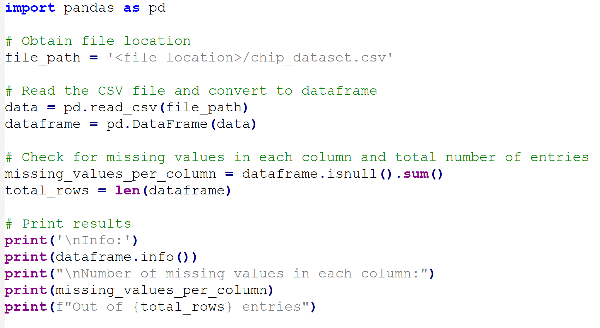
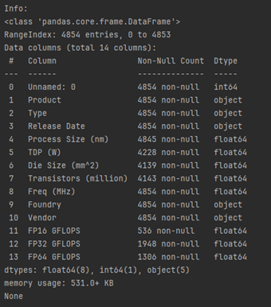
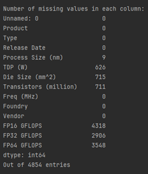

Navigating Technological Shifts in Computing Power
Table of Contents
Task
This project embarks on an in-depth exploration of the swiftly evolving semiconductor landscape, scrutinizing the developmental trends in Central Processing Units (CPUs) and Graphics Processing Units (GPUs) over time.
The original data contained 4,853 data entries and was obtained from Kaggle.
My responsibilities involves investigating the intricate relationships between process node reduction, transistor count escalation, and Thermal Design Power (TDP) evolution, explaining how these factors intricately shape the performance and efficiency of processors.
Tools Utilised


Background
Semiconductor technology is in a constant state of evolution, with CPUs and GPUs at the forefront. This analysis delves into the rapidly evolving landscape of semiconductor technology, examining trends in CPU and GPU development over time. It explores the intricate connections between process node reduction, transistor count escalation, and Thermal Design Power (TDP) evolution, shedding light on how these factors shape the performance and efficiency of processors.
TDP, or Thermal Design Power, is a crucial metric representing the maximum heat a computer component can generate under any workload. Expressed in watts (W), TDP guides the design of cooling systems to prevent overheating. Smaller process nodes allow for more transistors to be packed onto the same space, contributing to improved performance and energy efficiency.
Data Cleaning and Integration
1. Summarising data and identifying any invalid entries within both datasets
- From both datasets, using Excel's filter function, a total of 75 data entries have "NaT" in the "Release Date" column.
- If the data is from a stakeholder, I'd seek clarification and discuss with the team and stakeholder. Collaboratively deciding the best approach for effective analysis, ensuring informed decisions based on the available dataset.
- Through comprehensive research and literature review, CPUs that were not released were appropriately labelled as 'Never Released' in the dataset. This meticulous approach ensures transparency in data representation, providing an accurate foundation for subsequent analysis and decision-making processes.
A Python script was developed, utilising Pandas, to summarises key insights for each heading in the dataset, offering valuable information on the data types for each header and how many blank spaces are present in the dataset.



2. Enhancing Dataset Insights with "Company" Information
- Integrated a dedicated data column to highlight the prominent CPU and GPU manufacturers in a competitive marketplace.
- Implemented a formula, "=IF(ISNUMBER(FIND(" ",B2)),LEFT(B2,FIND(" ",B2)-1),B2)", to dynamically extract and display the company name responsible for each CPU/GPU product listed in the "Product" column. This addition enhances the dataset's granularity and supports a more nuanced analysis of industry dynamics.
Key Findings and Visualizations
CPU Process Node and Transistor Count:
- Relentless pursuit of smaller process nodes and higher transistor counts drives CPU innovation.
- Consistent decrease in average CPU process node size over time indicates industry success in reducing transistor size.
- Reduction aligns with Moore's Law, reflecting an exponential increase in transistor count.
- Reduction in process node size, coupled with increased transistor count, signifies improved performance and energy-efficient design.
- AMD's aggressive adoption of TSMC's 14 and 7nm process node signifies a strategic leap forward after 2017, whilst Intel's fabs stagnate at 14nm, potentially hindering scalability and contributing to contrasting TDP trends.
- Despite process node constraints, Intel consistently enhances CPU performance through architectural innovations, showcasing commitment and competitiveness.
CPU TDP Trends:
- Correlation between CPU TDP trends and manufacturing is evident.
- AMD's embrace of smaller process nodes results in CPUs with higher transistor counts, demonstrating improved computational capabilities and enhanced energy efficiency.
- Divergence in TDP trends between AMD and Intel underscores the critical role of manufacturing strategy in balancing performance and power consumption.
GPU Process Node and Transistor Count:
- GPUs exhibit a relentless pursuit of smaller process nodes and increased transistor counts.
- Inclusion of ATI's GPUs in the analysis, post-acquisition by AMD in 2006, provides a comprehensive view of AMD's graphics technology evolution.
- Both AMD and NVIDIA GPUs align with the industry trend, showcasing advancements in manufacturing technology.
GPU TDP Trends:
- Steady increase in GPU TDP over time reflects the industry's response to escalating consumer demands for graphics performance.
- NVIDIA GPUs experience a significant rise in TDP.
- AMD's post-acquisition period initially displays a high TDP that gradually decreases before rising again.
- Managing TDP in GPUs is intricately tied to advancements in manufacturing technology, similar to CPUs.

Conclusion
The intricate interplay between CPU and GPU technological trends reveals the pivotal role of semiconductor manufacturing in shaping performance, efficiency, and power consumption. AMD's strategic adoption of smaller process nodes showcases innovation, while Intel faces challenges. These dynamics underscore the need for a balanced approach to TDP management. As the semiconductor industry evolves, monitoring these trends is imperative for anticipating advancements and staying competitive.